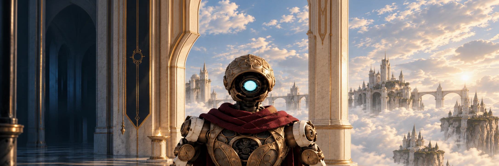

Confront the machines
Fight at close quarters with fists and axe. Turn broken scenery into a weapon.

A royal steampunk action RPG
Something happened
above the clouds.
You don’t know what you are.
Your mission is to discover what happened
in the forgotten heights.
High above the clouds, a forgotten world waits in silence. Ivory halls, weathered brass, and monumental machinery surround a mystery you have come to uncover.
SARUR is an atmospheric steampunk action RPG. Explore its abandoned heights, confront the machines that remain, and work through the mechanisms standing between you and the truth.
A world of pale stone and clockwork.
A journey toward an answer.
Fight at close quarters with fists and axe. Turn broken scenery into a weapon.
Explore exposed walkways, operate mechanisms, and unravel environmental puzzles.
Follow your mission through the forgotten heights—and the question of what you are.
02 / A glimpse above the clouds

The heights are waiting
The answer is still out there.
SARUR · In development